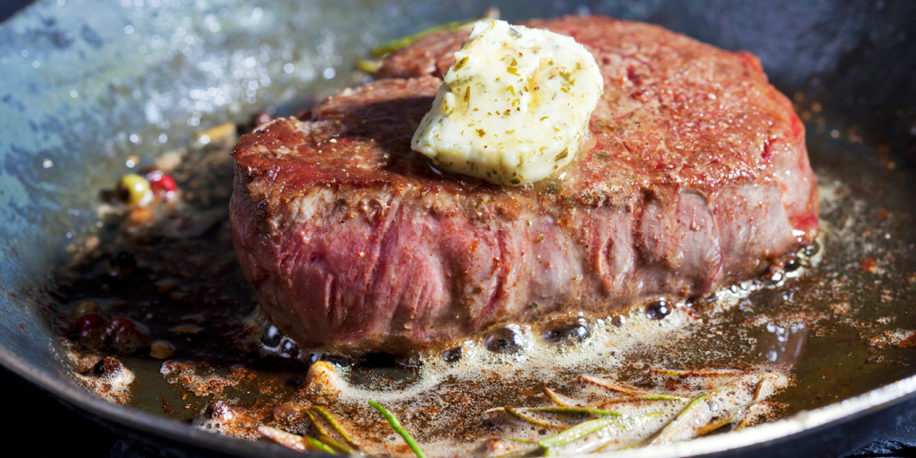

Recipe for authentic American Steak!

Description
Traditional, full-flavored steak is seered together in just minutes with garlic, thyme, and three other delicious herbs.
Perfect to eat with your whole family and friends
Ingredients
- Tenderloin steak
- 2 cloves of garlic
- 2 sticks of butter
- 3 twigs of thyme
- Mix of 3 herbs available at your local dealershop
Steps
- Heat up your grill until you see the butter turn brown
- Add your steak and sear for 2 minutes
- Flip the steak and add all butter, garlic and herbs
- Start basting the steak
- Serve when your steak reaches its cuisson